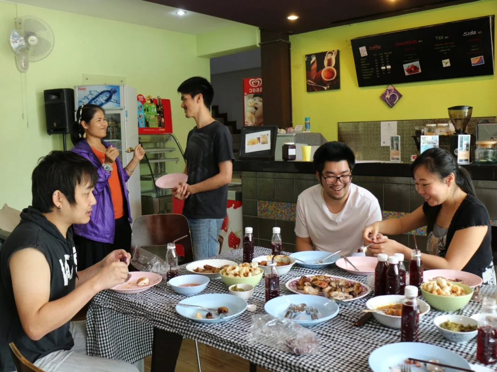

YWAM เชียงใหม่
โรงเรียนศึกษาพระคัมภีร์ (SBS)
เป้าหมายของโรงเรียนศึกษาพระคัมภีร์ (SBS) คือช่วยนักเรียนของเราให้มีความรู้ที่หนักแน่นจากพระคัมภีร์ เพื่อจะช่วยชี้ทางในชีวิตทุกด้านของพวกเขา

ภาพรวมของโรงเรียน
พื้นฐานที่มั่นคงจากพระคัมภีร์
เราเชื่อว่าเมื่อคนมีพื้นฐานที่มั่นคงจากพระคัมภีร์นั้นแล้ว พันธกิจของพวกเขา ชีวิตสมรส การดูแลในด้านการเงิน การให้คำปรึกษา ฯลฯ จะถูกนำด้วยพระคำของพระเจ้า และจะนำไปสู่การเกิดผลอย่างมีประสิทธิภาพและไปสู่พระสิริของพระเจ้า
สำหรับการศึกษาในโรงเรียนนี้ นักเรียนจะต้องเรียนหนังสือทุกเล่มในภาคพันธสัญญาใหม่ด้วยการใช้หลักการศึกษาพระคัมภีร์แบบอินดัคทีฟ เป้าหมายของเราเพื่อให้นักเรียนได้รับใจความอันสำคัญของแต่ละหนังสือในภาคพันธสัญญาใหม่ และเข้าใจถึงภาพรวมของทั้งภาคพันธสัญญาใหม่
รายละเอียดของโรงเรียน
เรียนหนัก และคุ้มค่า
โรงเรียนศึกษาพระคัมภีร์ นักเรียนจะต้องใช้เวลาศึกษาด้วยตนเอง 6 ถึง 8 ชั่วโมงในแต่ละวัน เป็นการเรียนที่หนักและมีการบ้านเยอะ แต่ผลที่ได้รับก็คุ้มค่า เพราะนั่นคือพื้นฐานแห่งพระคัมภีร์ที่ล้ำค่าต่อการดำเนินชีวิตและพันธกิจ
เราเปิดให้ทั้งคนที่ผ่านดีทีเอสและยังไม่ผ่านดีทีเอสเข้าร่วมฝึกอบรมในโรงเรียนศึกษาพระคัมภีร์

คำพยาน
เสียงจากนักเรียน
อยากให้มาเรียนโรงเรียนนี้ เพราะเป็นสิ่งที่ดีมากๆ โดยส่วนตัวได้เข้าใจเบื้องหลังประวัติศาสตร์ของหนังสือแต่ละเล่มและไม่ตีความอย่างตื้น ถึงแม้ว่าดิฉันจะเป็นผู้เชื่อมาหลายปีแล้ว แต่สิ่งที่ได้มาเรียนรู้ก็ทำให้เหมือนรู้สึกว่าเป็นคริสเตียนอีกด้านหนึ่ง ได้มีประสบการณ์โดยตรงที่ได้เรียนรู้จากพระเจ้าด้วยการศึกษาเอง ไม่ได้เป็นข้อสรุปที่เกิดจากคำสอนของผู้อื่น
โดยปกติชอบพระกิตติคุณ เล่มล่าสุดที่เรียนก็เป็นหนังสือยอห์น และเห็นว่าหนังสือเล่มนี้เน้นไปที่พระเยซูอย่างชัดเจน ประทับใจกับคำอธิษฐานของพระเยซู ซึ่งเป็นตอนที่พระเยซูกำลังจะถูกทรมานและถูกตรึง พระองค์ก็ยังเลือกที่จะอธิษฐานเพื่อทำตามพระทัยของพระบิดา ส่วนตัวเมื่อเจอกับความทุกข์ยากก็อธิษฐานอยากให้มันผ่านพ้นไปเร็วๆ หากเทียบกับคำอธิษฐานของพระเยซูแล้วก็เห็นถึงความเห็นแก่ตัวของตัวเอง พระเยซูกล้าจะเผชิญกับปัญหา และยังยินดีที่จะทำตามหัวใจของพระบิดาด้วย
สายพิณ
ชอบในเรื่องจริงที่ได้เห็นนักเขียนอย่างเปาโล เปโตร ยอห์นและนักเขียนท่านอื่นๆ เขียนถ้อยคำที่เปี่ยมด้วยอานุภาพเพื่อหนุนใจผู้อ่านดั้งเดิมขณะที่ผู้อ่านดั้งเดิมกำลังเผชิญหน้ากับปัญหาจริงๆ ในสถานการณ์ที่เป็นอยู่ในขณะนั้นจริงๆ ได้เรียนรู้ถึงหัวใจของผู้เขียนที่มีต่อผู้เชื่อของพระเจ้าและได้เห็นแบบอย่างของการยอมวางสิทธิ์ส่วนตัวเพื่อเสริมสร้างกายของพระคริสต์ทั่วทั้งโลก และเล็งเห็นถึงความจำเป็นในด้านพันธกิจของการสร้างและเตรียมผู้เชื่อของพระเจ้าให้เป็นพระวิหารแห่งพระบารมีของพระองค์ (เอเฟซัส 4:11-13)
เกษรา
สมัครเรียน
ยังไม่มีแบบฟอร์มสมัครออนไลน์
กรุณาดาวน์โหลดใบสมัคร หรือติดต่อเราเพื่อขอความช่วยเหลือในการสมัคร
วันเปิดเรียนและค่าเรียนเปลี่ยนแปลงในแต่ละรุ่น กรุณาติดต่อเราเพื่อสอบถามข้อมูลล่าสุดก่อนวางแผน